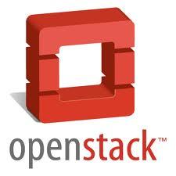

//@程辉:建议安排在《OpenStack中国行活动》庆祝，今天将发布深圳站的活动，近期成都、武汉、西安的活动也将陆续发布，北京站活动：网页链接@ben_杜玉杰:#OpenStack#为了庆祝OpenStack基金会正式成立，OpenStack官方将会于9月19号在全球范围内举办社区庆典活动，欢迎各地Stacker一起参与。届时会发布基金会官方介绍。我发起了“OpenStack Foundation Global Meetup”活动，推荐您来参加！ 地址：网页链接 

 网页链接
网页链接